課題A3 (機能理解)
課題A3では, JHotDrawの図形の移動機能について見ていきます.
具体的には,
「選択された図形がJHotDrawのシステム内部でどのように管理され，図形移動機能の実行によってどのように取り出されて，移動していくか?」
を理解することを目指して, 以下のようにトレースデバッガを操作していきます.
ワークスペース内のjhotdraw7が、JHotDrawを構成するプロジェクトです。
実行手順
-
ワークスペース中にあるjhotdraw7プロジェクトを選択し, メニューバーの 検索 → Java で DefaultDragTracker というタイプの宣言を検索してください.
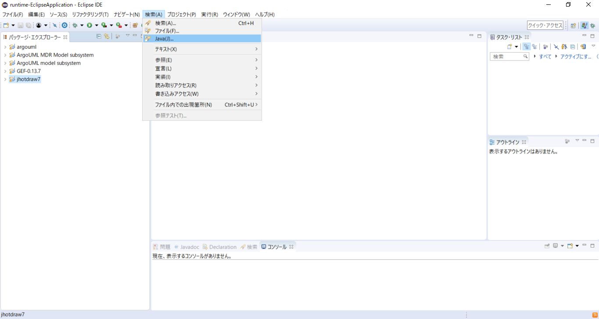
-
DefaultDragTrackerクラスのソースファイルを開いて159行目 (DefaultDragTracker#mouseDragged(MouseEvent)) にブレークポイントを入れてください.
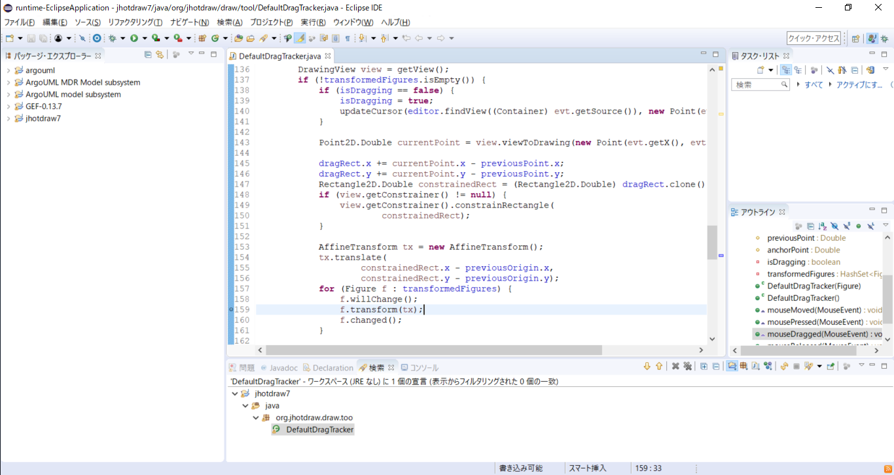
-
メニューバーの ウィンドウ → パースペクティブ → パースペクティブを開く → その他 → トレースデバッガ(逆方向) でトレースデバッガのパースペクティブを開いてください.
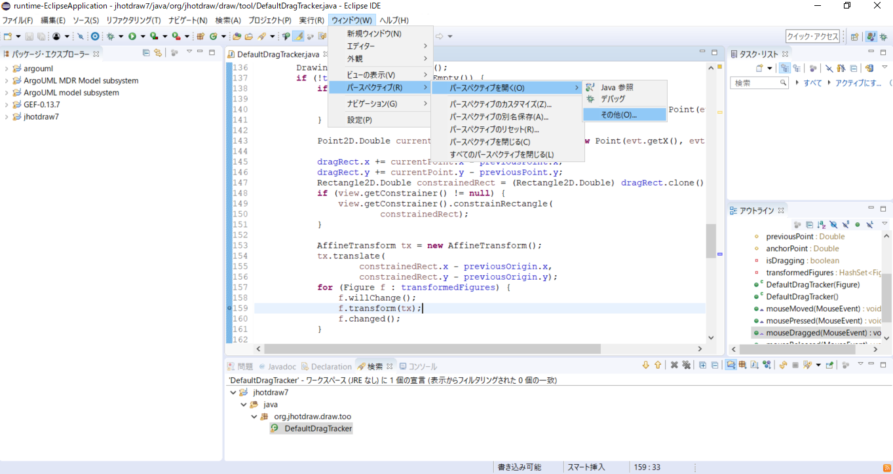
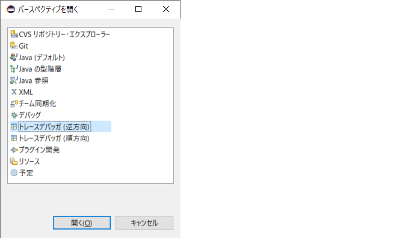
-
開いたトレースデバッガのパースペクティブ右上のブレークポイントビュー上にあるフォルダアイコン(左から1番目)を
クリックしてトレースファイル (C:\Users\userXX\runtime-EclipseApplication\jhotdraw7\jHotDrawBenchMarkWithMoreStandardClasses.trace) を開いてください.
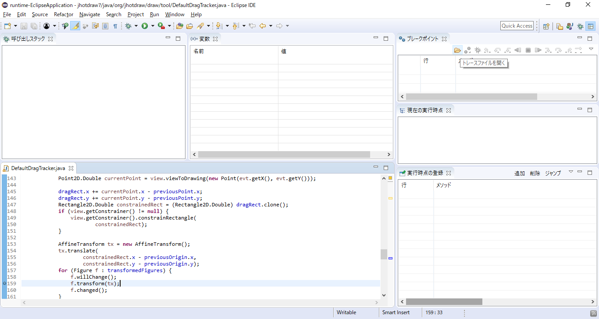
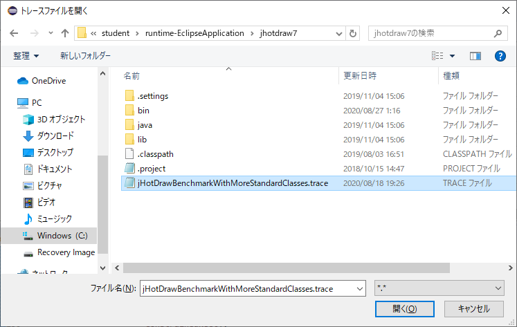
-
トレースファイルの読み込みが終わるまで待ってから, ブレークポイントビュー上にある「ブレークポイントをEclipseから取り入れる」アイコン(左から2番目)を
クリックしてトレースデバッガ用のブレークポイントを作成してください.
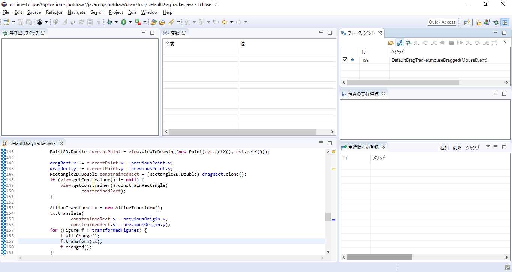
-
ブレークポイントビュー上にあるデバッグアイコン(左から3番目)をクリックしてください.
トレースデバッガによるデバッグ実行が起動し, ブレークポイントを入れた位置の行が選択された状態で一時停止します.
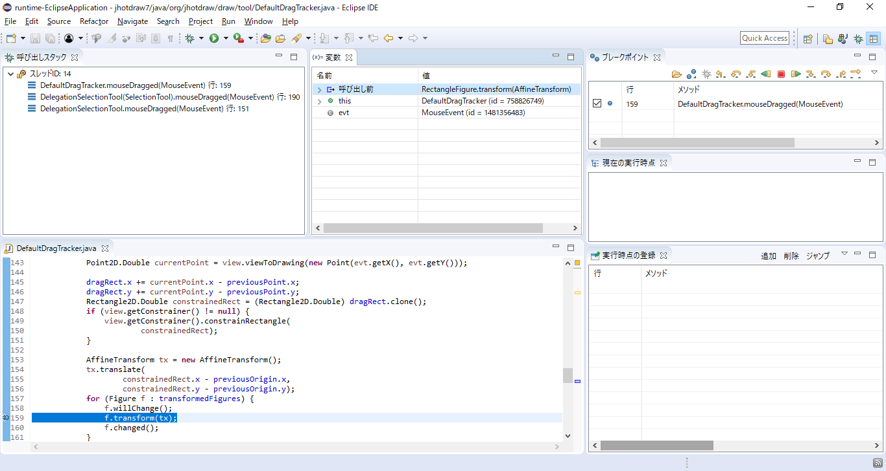
機能理解
Figure クラスは図形を表す JHotDraw のクラスです.
また, RectangleFigure クラスは矩形を表す JHotDraw のクラスで, Figure クラスの子孫クラスにあたります.
ブレークポイントを置いた行は、図形を移動するたびに実行されます.
先ほどの実行手順にしたがって進めていくと, 下図のように DefaultDragTracker クラスの
mouseDragged(MouseEvent) メソッド内の159行目で一時停止している状態になっているはずです.
この状態になっていれば, ここから時間計測を開始してください. 時間計測はできる限り，1分以内の単位での計測をお願いします.
DefaultDragTracker クラスの mouseDragged(MouseEvent) メソッドの159行では,
ローカル変数 f で参照されている RectangleFigure クラスのインスタンスに対してメソッドが呼び出されていることが確認できます.
まずは, この f の値がどこから来たのかを見るために, ステップバックオーバーを2回押して157行目の拡張for文まで戻ってください.
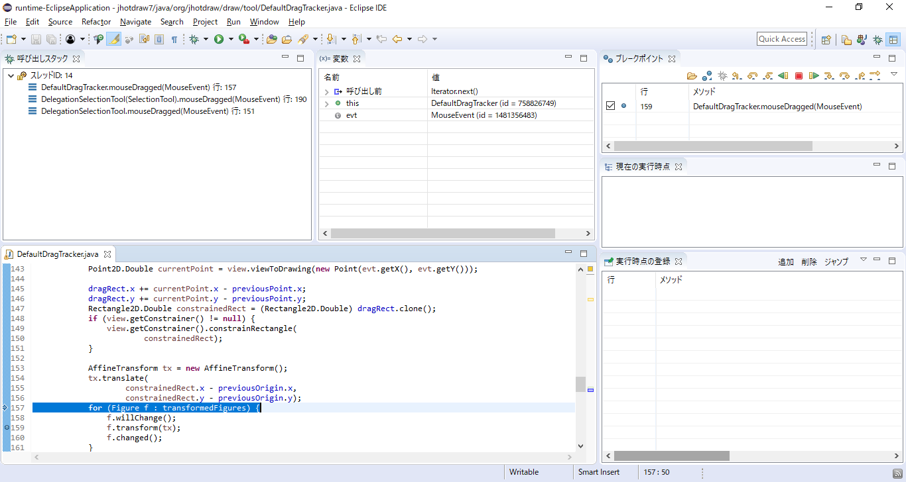
先ほどのステップバックオーバーの実行によって157行目まで戻ってきました.
ここでは, まずステップネクストを1回押してください.
そのあと, 変数ビュー上にある「呼び出し後」 (Iterator.next() の呼び出し後) を開くと,
戻り値として RectangleFigure クラスのインスタンス (id = 1952912699) が返されていることがわかります.
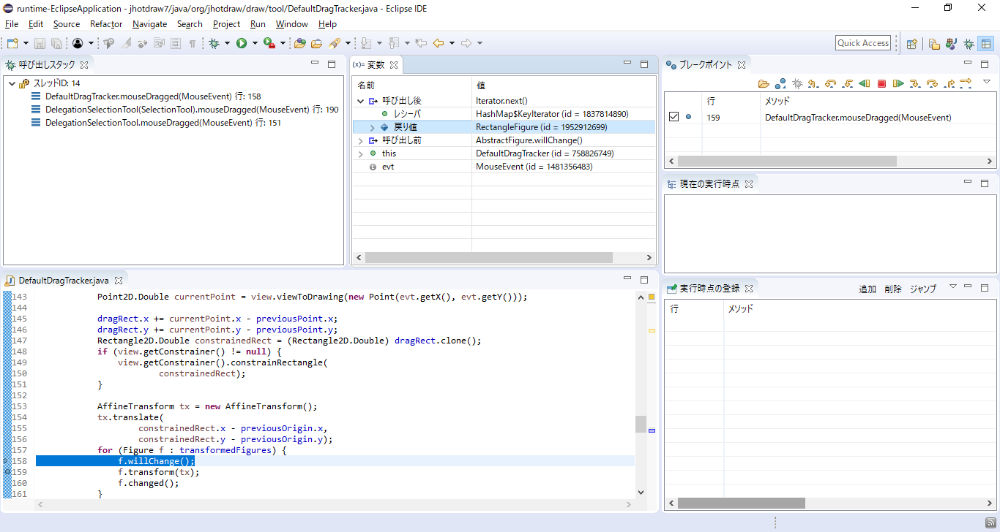
ソースコードを見ると, RectangleFigure クラスのインスタンス (id = 1952912699) は DefaultDragTracker クラスのインスタンス (id = 758826749) の
フィールド transFormedFigures が参照しているセットから取得していることがわかります.
次は, この transFormedFigures に RectangleFigure クラスのインスタンスがどの実行時点で追加されたのかを見ていきます.
ここで, 変数ビュー上の「呼び出し後」のメソッド名が Iterator.next() であることを確認してください.
それを確認したら, 変数ビュー上で開いている「呼び出し後」の中にある戻り値を右クリックして「オブジェクトの追加時点に飛ぶ」を選択してください.
実行すると, オブジェクトの追加時点である DefaultDragTracker クラスの mousePressed(MouseEvent) メソッドの118行目にまで現在の実行時点が遡ります.
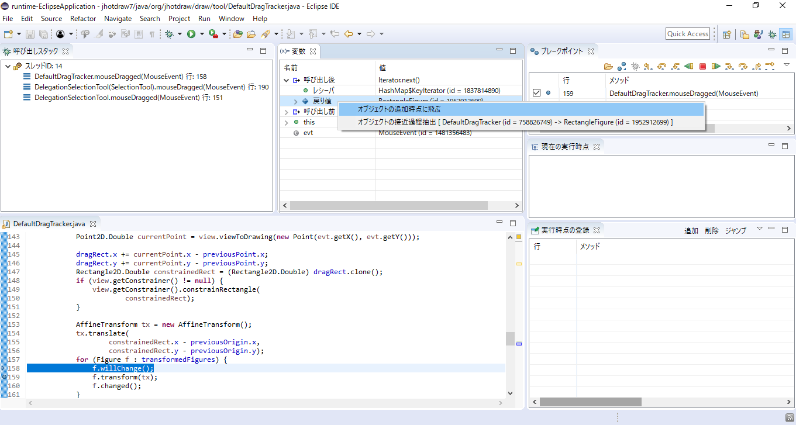
先ほどの操作によって, DefaultDragTracker クラスの mousePressed(MouseEvent) メソッドの118行目に現在の実行時点が移りました.
この118行目では, ローカル変数 f の値が フィールド transFormedFigures が参照している HashSet のインスタンスに追加されていることが確認できます.
ここで, 「トレースデバッガ」パースペクティブの右下にある「実行時点の登録」ビューの追加ボタンをクリックしてください.
そうすると, 現在の実行時点がこのビュー上に登録されます.
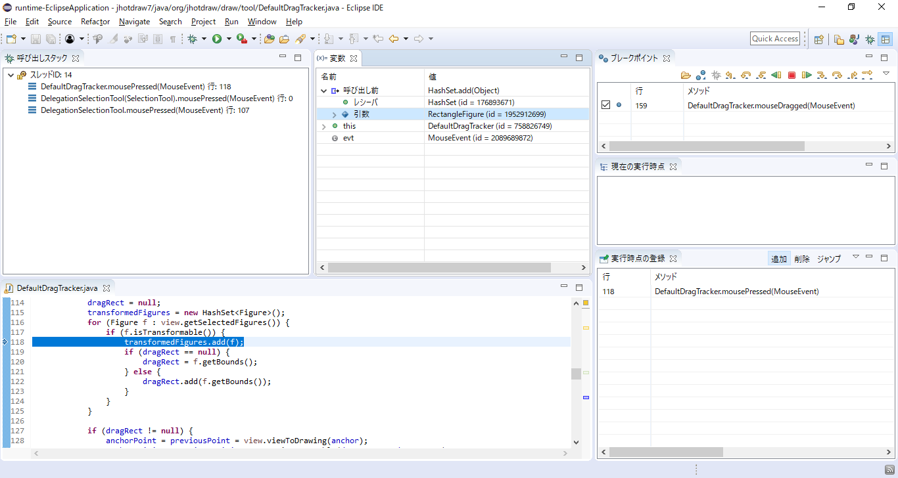
この f の値がどこから来たのかを見るために, ステップバックオーバーを2回押して116行目の拡張for文に戻ってください.
ここで, ソースコードを見ると, この116行目の拡張for文ではローカル変数 view が参照しているインスタンスに対して getSelectedFigures() メソッドが呼び出され,
その戻り値として返されたコレクションから先ほどのローカル変数 f の値を取得していることが確認できます.
これを確認したら, この戻り値がどうなっているのかを見るために, ステップバックインを3回押して getSelectedFigures() メソッドの中に後ろから入ってください.
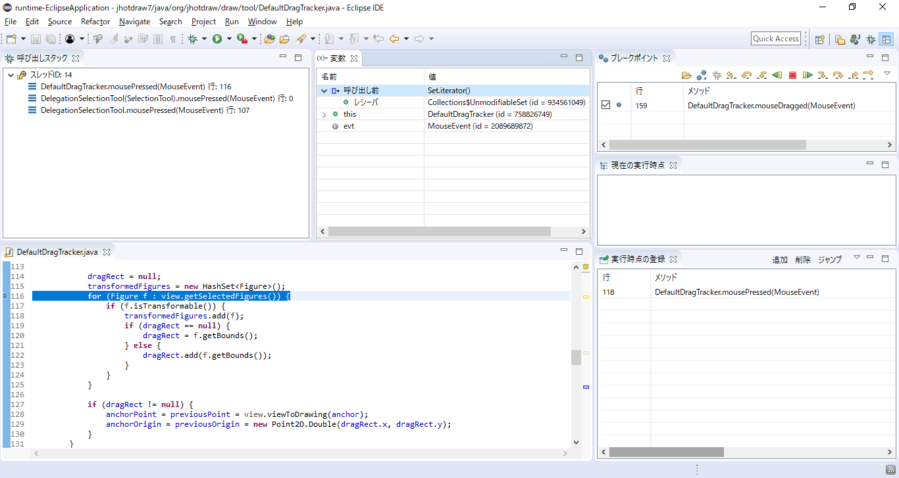
DefaultDrawingView クラスの getSelectedFigures() メソッドに入りました.
ここで, ソースコードを見ると, Collections クラスの static メソッドである unmodifiableSet(Set) が呼び出されており,
その引数として フィールド selectedFigures が渡されていることが確認できます.
この Collections#unmodifiableSet(Set) は引数として渡されたセットを Collections$UnmodifiableSet のインスタンスに変換して返すメソッドです.
また, 変数ビュー上の「呼び出し後」および this を開くと, このフィールド selectedFigures は DefaultDrawingView クラスの
インスタンス (id = 150367587) のフィールドであることがわかります.
これを確認したら, ステップバックリターンを1回押して呼び出し元に戻ってください.
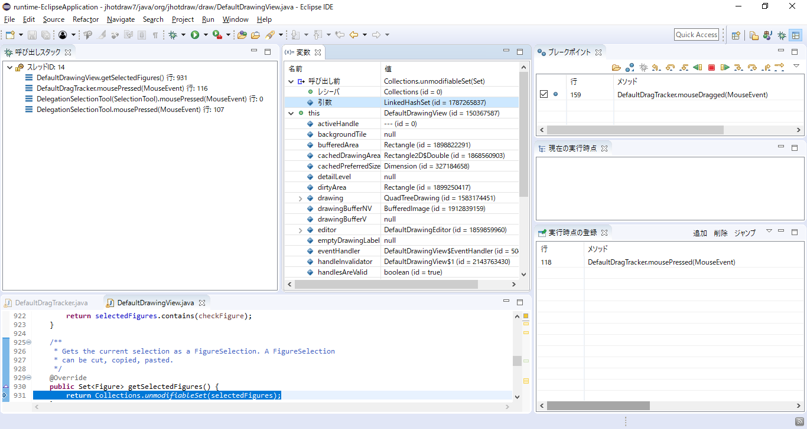
先ほどの結果から, RectangleFigure クラスのインスタンス (id = 1952912699) は
DefaultDrawingView クラスのインスタンス (id = 150367587) が LinkedHashSet の要素として保持していることがわかりました.
次は, この DefaultDrawingView クラスのインスタンスがどこから来たのかを見ていきます.
ここでは, ステップバックオーバーを5回押して98行目に戻ってください.
ソースコードを見ると, getView() メソッドの戻り値を ローカル変数 view に代入していることが確認できます.
ここで, この戻り値がどうなっているのかを確認するために, ステップインを1回押してこのメソッドの中に前から入ってください.
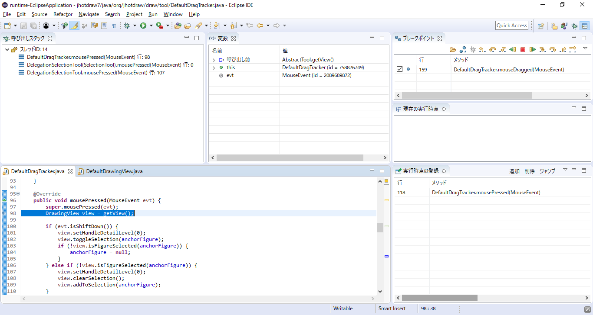
AbstractTool クラスの getView() メソッドに入りました.
ここで, 変数ビュー上の this を開くと, DefaultDragTracker クラスのインスタンス (id = 758826749) の editor フィールドが
DefaultDrawingEditor クラスのインスタンス (id = 1859859960) を参照していることがわかります.
これを確認したら, ステップインを3回押して DefaultDrawingEditor クラスの getActiveView() メソッドの中に前から入ってください.
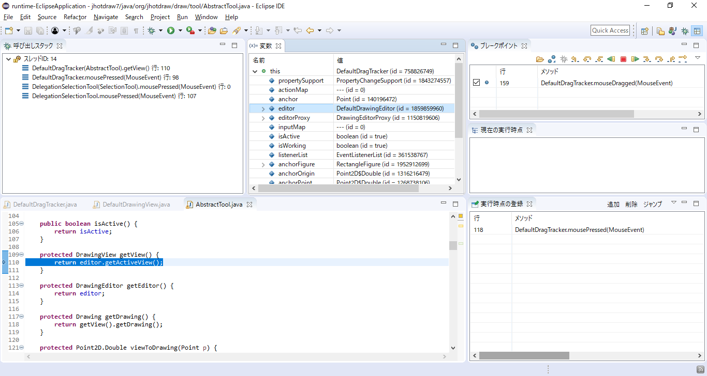
DefaultDrawingEditor クラスの getAcitiveView() メソッドに入りました.
ここで, 変数ビュー上の this を開くと, DefaultDrawingEditor クラスのインスタンス (id = 1859859960) の
フィールド activeView が DefaultDrawingView クラスのインスタンス (id = 150367587) を参照していることがわかります.
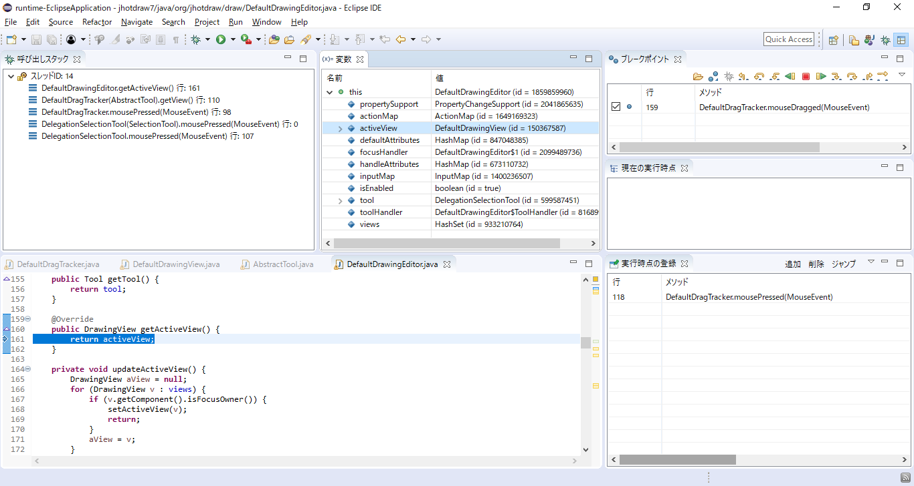
先ほどの結果から, DefaultDrawingView クラスのインスタンス (id = 150367587) は
DefaultDrawingEditor クラスのインスタンス (id = 1859859960) が参照していることがわかりました.
呼び出しスタック上で2つ呼び出し元である DefaultDragTrackerクラスの mousePressed(MouseEvent) メソッドをクリックしてください.
ここで, 課題A3は終了です. 時間計測を終了してください.
なお, デバッグ実行は終了せずにそのままの状態にしておいてください.
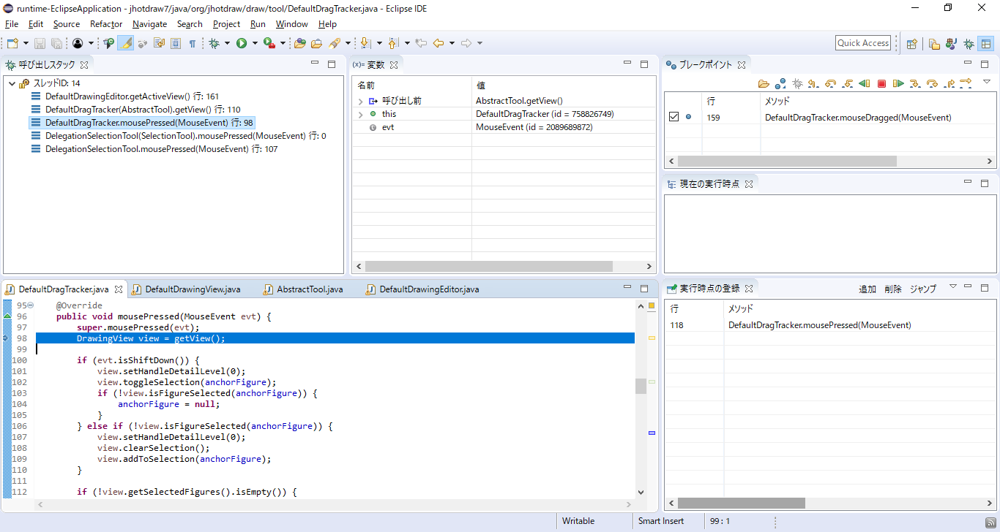
課題A3の機能理解が終了しましたら, 以下のアンケートにお答えください.
次へ